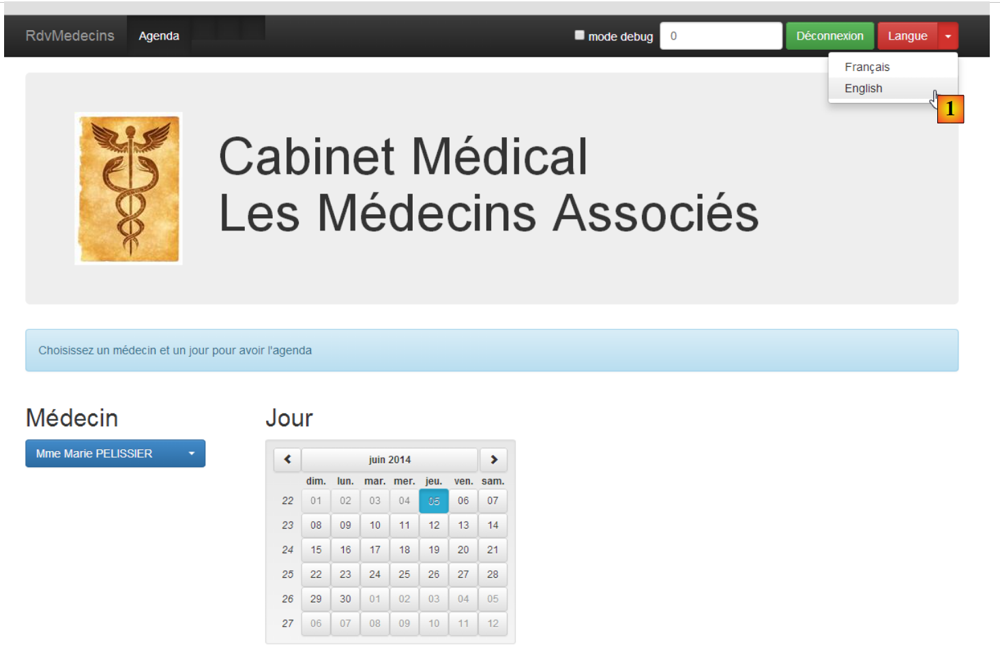

1. مقدمة
ملف PDF الخاص بالوثيقة متاح |هنا|.
الأمثلة الواردة في المستند متاحة |هنا|.
هنا، نقترح تقديم إطارين باستخدام مثال العميل/الخادم:
- AngularJS المستخدم للعميل. وللتبسيط، سيُشار إليه فيما بعد باسم Angular؛
- يُستخدم Spring 4 للخادم. وللتبسيط، سيُشار إليه فيما بعد باسم Spring؛
يتطلب فهم هذا المستند بعض المتطلبات الأساسية:
- مستوى متوسط في Java EE؛
- معرفة JPA (Java Persistence API)، الذي سيُستخدم للوصول إلى قاعدة البيانات؛
- معرفة بإصدار واحد على الأقل من Spring لفهم فلسفة هذا الإطار؛
- خبرة في استخدام Maven لتكوين مشاريع Java؛
- فهم أساسي للاتصال عبر HTTP في تطبيق الويب؛
- علامات HTML الشائعة؛
- معرفة أساسية بلغة JavaScript؛
سيتم تقديم وشرح المعرفة الأخرى الضرورية مع تقدم دراسة الحالة.
هذا المستند ليس دورة تدريبية وهو غير مكتمل من نواحٍ عديدة. لمعرفة المزيد عن هذين الإطارين، يمكنك استخدام المراجع التالية:
- [ref1]: كتاب "Pro AngularJS" للكاتب آدم فريمان، الصادر عن دار Apress. إنه كتاب ممتاز. يتوفر كود المصدر للأمثلة الواردة في هذا الكتاب مجانًا على [http://www.apress.com/downloadable/download/sample/sample_id/1527/]؛
- [ref2]: الوثائق الرسمية لـ AngularJS [https://docs.angularjs.org/guide]
- [ref3]: كتاب "Spring Data" من O'Reilly [http://shop.oreilly.com/product/0636920024767.do]، الذي يغطي استخدام إطار عمل [Spring Data] للوصول إلى البيانات، سواء من قواعد البيانات العلائقية أو قواعد البيانات غير العلائقية (NoSQL)؛
- [ref4]: كتاب "Pro Spring 3" الصادر عن Apress. هذا هو سلف Spring 4، ولكنه يغطي المفاهيم الرئيسية بالفعل؛
- [ref5]: الوثائق المرجعية لـ Spring 4 [http://docs.spring.io/spring/docs/current/spring-framework-reference/pdf/spring-framework-reference.pdf].
المصادر المستخدمة في هذا المستند هي تلك المذكورة أعلاه، بالإضافة إلى [http://stackoverflow.com/] الذي لا غنى عنه في العديد من جلسات تصحيح الأخطاء.
1.1. بنية التطبيق
ستتضمن التطبيق قيد الدراسة البنية التالية:

- في [1]، يقوم خادم الويب بتسليم صفحات ثابتة إلى المتصفح. تحتوي هذه الصفحات على تطبيق AngularJS مبني على نمط MVC (Model–View–Controller). يشمل النموذج هنا كلاً من طرق العرض والمجال، الممثلين هنا بطبقة [Services]؛
- سيتفاعل المستخدم مع العروض المقدمة له في المتصفح. ستتطلب إجراءاته في بعض الأحيان الاستعلام عن خادم Spring 4 [2]. سيقوم الخادم بمعالجة الطلب وإرجاع استجابة JSON (JavaScript Object Notation) [3]. ستُستخدم هذه الاستجابة لتحديث العرض المقدم للمستخدم.
1.2. الأدوات المستخدمة
في هذا المستند، يتم استخدام أدوات التطوير التالية:
- Spring Tool Suite لخادم Spring: متاح للتنزيل مجانًا؛
- WebStorm لعميل Angular: تتوفر نسخة تجريبية لمدة شهر واحد للتنزيل مجانًا؛
- Wampserver لإدارة قاعدة بيانات MySQL 5: متاح للتنزيل مجانًا؛
يتم وصف تثبيت هذه الأدوات وغيرها في القسم 6.
1.3. ميزات التطبيق
يتوفر نموذج الكود |هنا| كملف ZIP قابل للتنزيل.
 |  |
- يوجد الخادم في مجلدي [rdvmedecins-metier-dao-v2] و [rdvmedecins-webapi-v3]؛
- يوجد العميل في المجلد [rdvmedecins-angular-v2]؛
- يوجد البرنامج النصي SQL لإنشاء قاعدة بيانات MySQL5 في المجلد [database]؛
1.3.1. إنشاء قاعدة البيانات
لاختبار التطبيق، نقوم أولاً بإنشاء قاعدة البيانات باستخدام البرنامج النصي SQL [dbrdvmedecins.sql]. نستخدم أداة [PhpMyAdmin] من WampServer:
 |
- في [1]، حدد أداة [phpMyAdmin] من WampServer؛
- في [2]، حدد خيار [Import]؛
 |
- في [3]، حدد الملف [database/dbrdvmedecins.sql]؛
- في [4]، قم بتشغيله؛
- في [5]، يتم إنشاء قاعدة البيانات.
1.3.2. خادم الويب / تنفيذ JSON
باستخدام Spring Tool Suite (STS)، قم باستيراد مشروعي Maven لخادم Spring 4:
 |
- في [1] و[2]، قم باستيراد مشاريع Maven؛
- في [3]، نحدد المجلد الأصلي للمشروعين المراد استيرادهما؛
 |
- في [3]، المشاريع المستوردة. قد تحتوي المشاريع على أخطاء. يجب أن يستخدم كل منها مُجمِّعًا >=1.7:
 |
لذلك، يلزم وجود إصدار JVM >=1.7:
 |
بمجرد انتهاء أخطاء JVM، يمكننا تشغيل مشروع [rdvmedecins-webapi-v3]:
 |
- في [4] و[5] و[6]، نقوم بتشغيل مشروع [rdvmedecins-webapi-v3] كتطبيق Spring Boot؛
ثم نحصل على السجلات التالية في وحدة التحكم STS:
1.3.3. تنفيذ عميل Angular
نفتح المجلد [rdvmedecins-angular-v2] باستخدام WebStorm:
 |
- في [1]، حدد خيار [Open Directory]؛
- في [2]، حدد المجلد [rdvmedecins-angular-v2]؛
 |
- في [3]، شجرة المجلدات؛
- في [4]، حدد الصفحة الرئيسية للتطبيق [app.html]؛
- في [5]، افتحها في متصفح حديث؛
 |
- في [6]، صفحة تسجيل الدخول إلى التطبيق. هذا تطبيق لحجز المواعيد للأطباء. وقد تمت تغطية هذا التطبيق بالفعل في الوثيقة "مقدمة إلى أطر عمل JSF2 و PrimeFaces و PrimeFaces Mobile"؛
- في [7]، مربع اختيار يسمح لك بتمكين أو تعطيل وضع [debug]. يُشار إلى هذا الوضع بوجود الإطار [8]، الذي يعرض نموذج العرض الحالي؛
- في [9]، وقت انتظار مصطنع بالمللي ثانية. القيمة الافتراضية هي 0 (بدون انتظار). إذا كانت N هي قيمة وقت الانتظار هذا، فسيتم تنفيذ أي إجراء من جانب المستخدم بعد وقت انتظار يبلغ N مللي ثانية. يتيح لك ذلك رؤية إدارة الانتظار التي ينفذها التطبيق؛
- في [10]، عنوان URL لخادم Spring 4. بناءً على ما سبق، يكون هذا [http://localhost:8080]؛
- في [11] و[12]، اسم المستخدم وكلمة المرور للمستخدم الذي يرغب في استخدام التطبيق. يوجد مستخدمان: admin/admin (اسم المستخدم/كلمة المرور) مع دور (ADMIN) و user/user مع دور (USER). دور ADMIN هو الوحيد الذي يمتلك إذنًا لاستخدام التطبيق. تم تضمين دور USER فقط لتوضيح استجابة الخادم في حالة الاستخدام هذه؛
- في [13]، الزر الذي يسمح لك بالاتصال بالخادم؛
- في [14]، لغة التطبيق. هناك لغتان: الفرنسية (الافتراضية) والإنجليزية.
 |
- في [1]، تقوم بتسجيل الدخول؛
 |
- بمجرد تسجيل الدخول، يمكنك اختيار الطبيب الذي تريد حجز موعد معه [2] وتاريخ الموعد [3]؛
- في [4]، تطلب عرض جدول مواعيد الطبيب المحدد لليوم المختار؛
 |
- بمجرد عرض جدول مواعيد الطبيب، يمكنك حجز موعد [5]؛
 |
- في [6]، حدد المريض الذي سيحضر الموعد وقم بتأكيد اختيارك في [7]؛
 |
بمجرد تأكيد الموعد، ستعود تلقائيًا إلى الجدول حيث يظهر الموعد الجديد الآن. يمكن حذف هذا الموعد لاحقًا [7].
تم وصف الميزات الرئيسية. وهي بسيطة. أما الميزات التي لم يتم وصفها فهي وظائف التنقل للعودة إلى عرض سابق. لنختتم بإعدادات اللغة:
 |
- في [1]، يمكنك التبديل من الفرنسية إلى الإنجليزية؛
 |
- في [2]، تتحول الواجهة إلى الإنجليزية، بما في ذلك التقويم؛